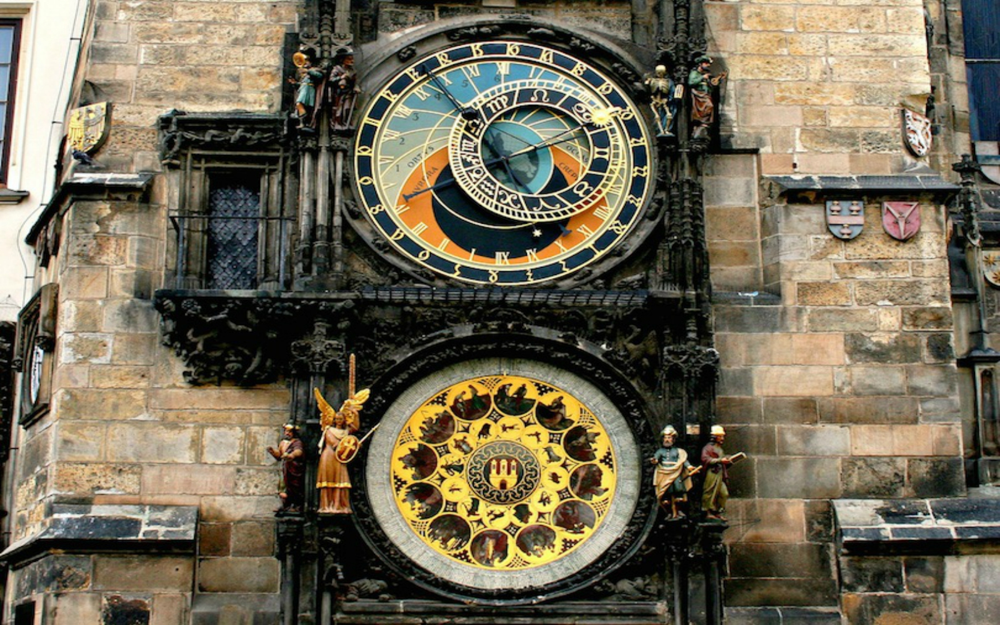

Charles Bridge
Connecting Old Town and Lesser Town over the River Vltava is the 600 year-old Charles Bridge, Prague’s most iconic landmark. A bustling, busy area, the bridge is almost never empty of people, although seeing it at dawn or in the evening will mean fewer crowds. Prague Castle, looming above, is lit at night, and provides a dramatic vista that enchants all visitors. On each end of the Charles Bridge rests a tower that offers a great view of the bridge to those who climb the steps.
Prague Castle
Towering above the city is Prague Castle, more of a sprawling complex than a single defensive building. The castle buildings span centuries and consists of a royal palace, a cathedral and three churches, a basilica, a monastery, defensive towers, royal stables, a tiny lane where craftsmen worked and a lot of magnificent gardens. The cathedral in the castle complex is a jewel in Prague’s crown, a superb example of Gothic architecture. Kings and emperors are buried here.
The Old Town Hall
You can find the Old Town Hall right in the heart of old town Prague. You’ll know you’ve found it by the gathering crowds at the base of its gothic tower where every hour between 9 a.m. and 11 p.m. the 12 Apostles appear on the astronomical clock. The appearance only lasts a moment, but the crowd will roar with applause for the amazing mechanical show. For a complete and detailed journey, take a guided tour of its tower and underground eas for a small fee.
Týn Church
One of Prague's most recognizable buildings is the Church of Our Lady before Týn, often abbreviated to simply Týn Church. Among the most well-known attractions in Prague, the church’s Gothic towers soar 80 meters into the sky and can be seen from all parts of the city. The present church was constructed in the 14th century, although the roof, towers and gables came years later. Inside, Tyn Church holds many works of art in Gothic, Baroque and Renaissance styles.